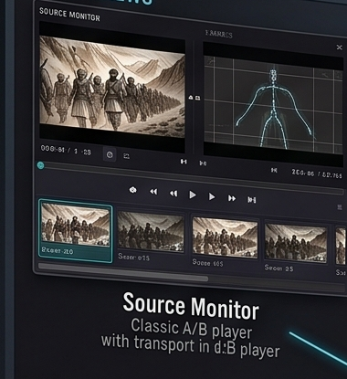
Source Monitor
Total View Modules Gallery - 380x415

Total View Modules Gallery - 380x415
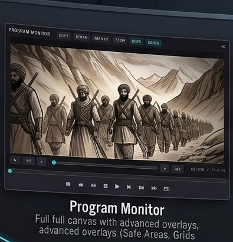
Total View Modules Gallery - 395x410
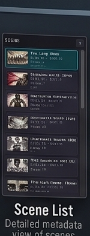
Total View Modules Gallery - 150x390
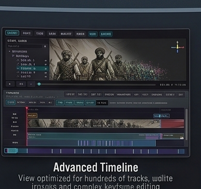
Total View Modules Gallery - 415x390
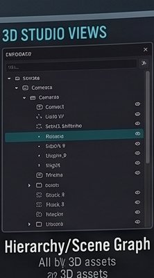
Total View Modules Gallery - 222x400
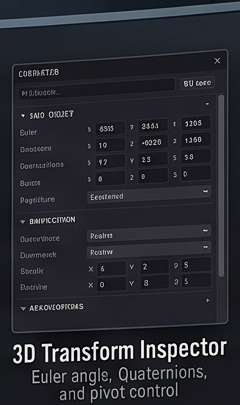
Total View Modules Gallery - 240x405
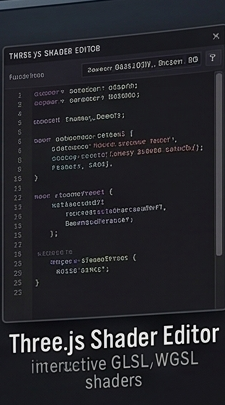
Total View Modules Gallery - 225x405
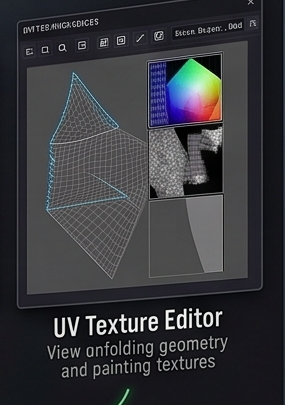
Total View Modules Gallery - 285x405
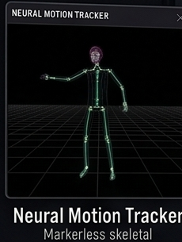
Total View Modules Gallery - 230x305
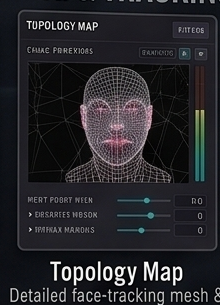
Total View Modules Gallery - 220x305
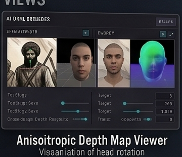
Total View Modules Gallery - 360x310
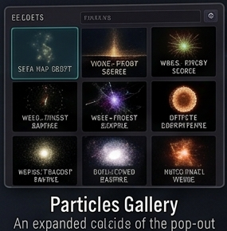
Total View Modules Gallery - 285x290
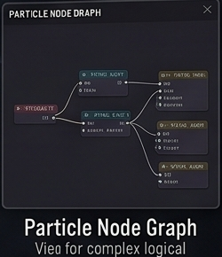
Total View Modules Gallery - 250x290
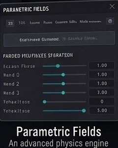
Total View Modules Gallery - 240x300
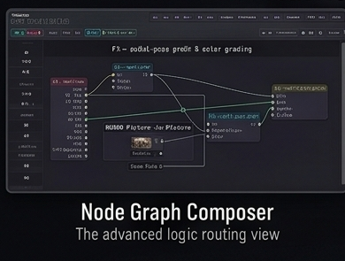
Total View Modules Gallery - 390x295
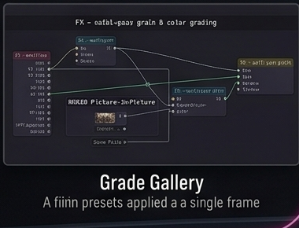
Total View Modules Gallery - 380x290
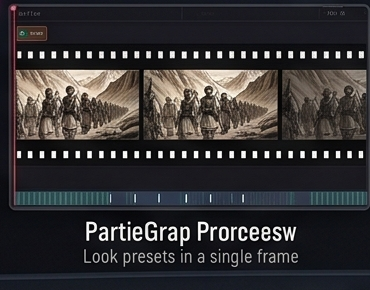
Total View Modules Gallery - 370x290
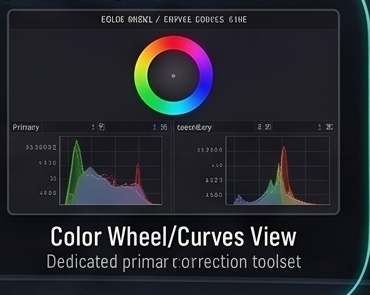
Total View Modules Gallery - 370x295
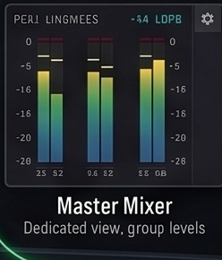
Total View Modules Gallery - 248x290
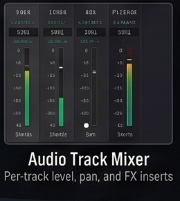
Total View Modules Gallery - 260x290
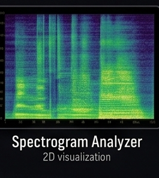
Total View Modules Gallery - 265x295
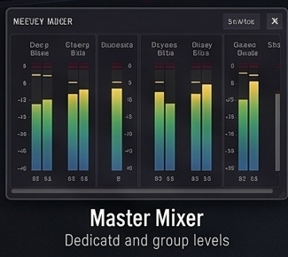
Total View Modules Gallery - 325x290
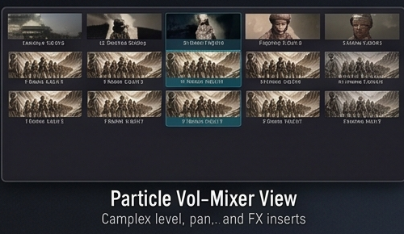
Total View Modules Gallery - 500x290
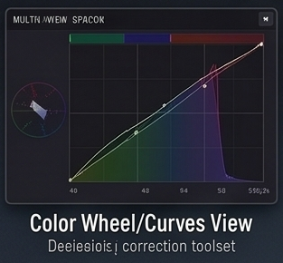
Total View Modules Gallery - 313x290
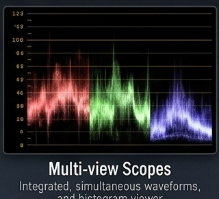
Total View Modules Gallery - 320x290
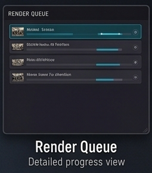
Total View Modules Gallery - 255x290
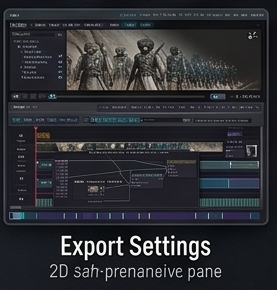
Total View Modules Gallery - 277x290
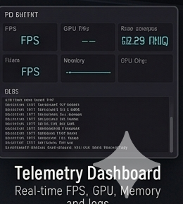
Total View Modules Gallery - 260x290
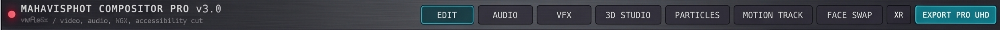
Compositor Pro v3 Interface - 2492x75
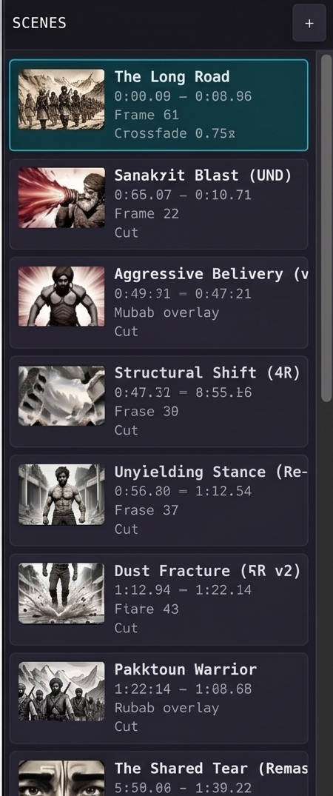
Compositor Pro v3 Interface - 450x1075
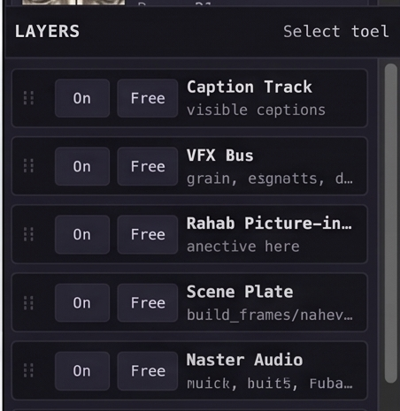
Compositor Pro v3 Interface - 452x465
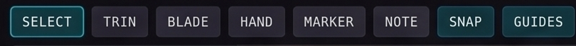
Compositor Pro v3 Interface - 810x65
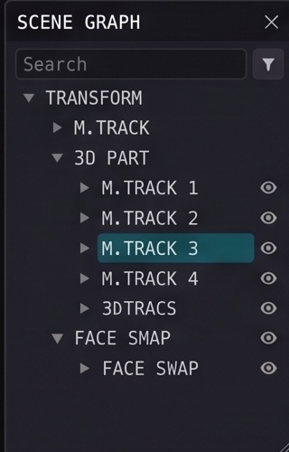
Compositor Pro v3 Interface - 320x500
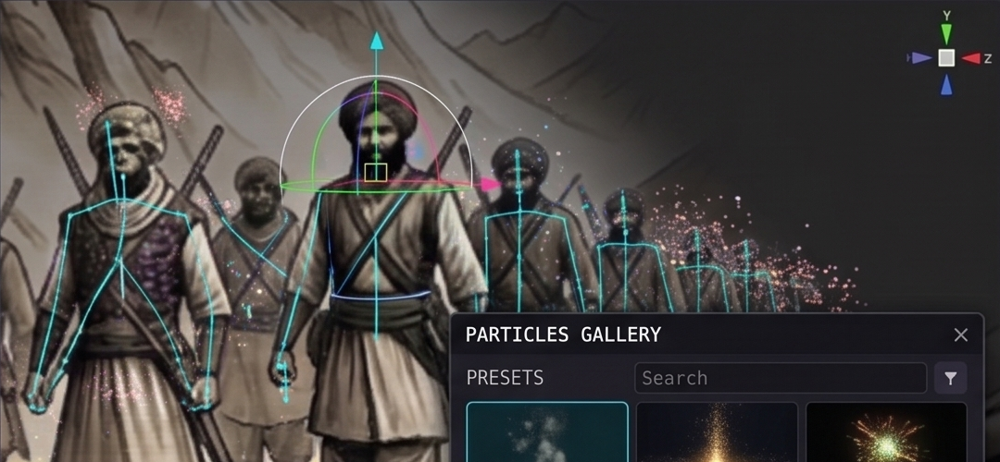
Compositor Pro v3 Interface - 1080x500
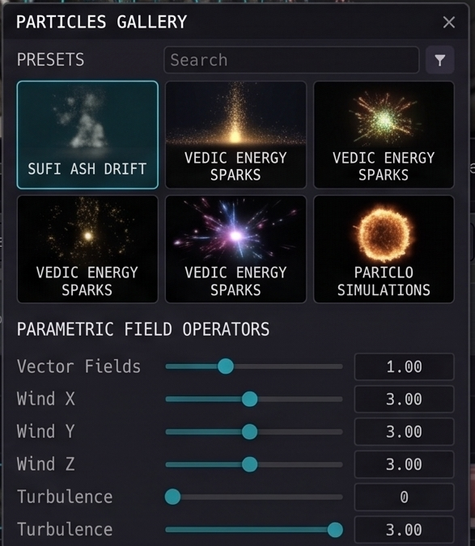
Compositor Pro v3 Interface - 587x675
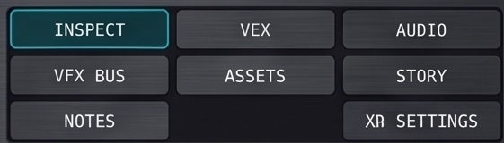
Compositor Pro v3 Interface - 561x160
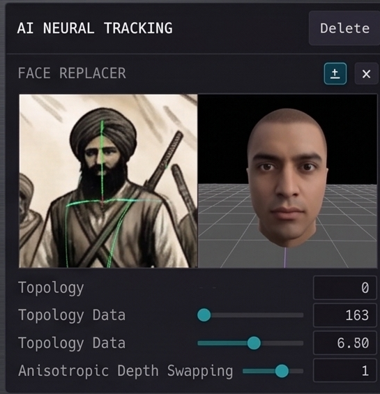
Compositor Pro v3 Interface - 545x565
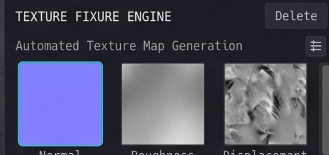
Compositor Pro v3 Interface - 550x260
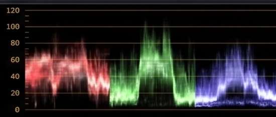
Compositor Pro v3 Interface - 550x233
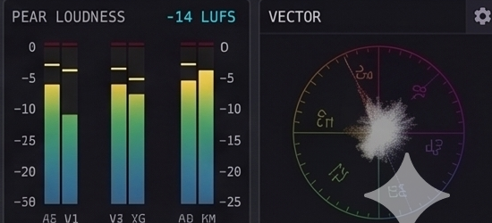
Compositor Pro v3 Interface - 550x250
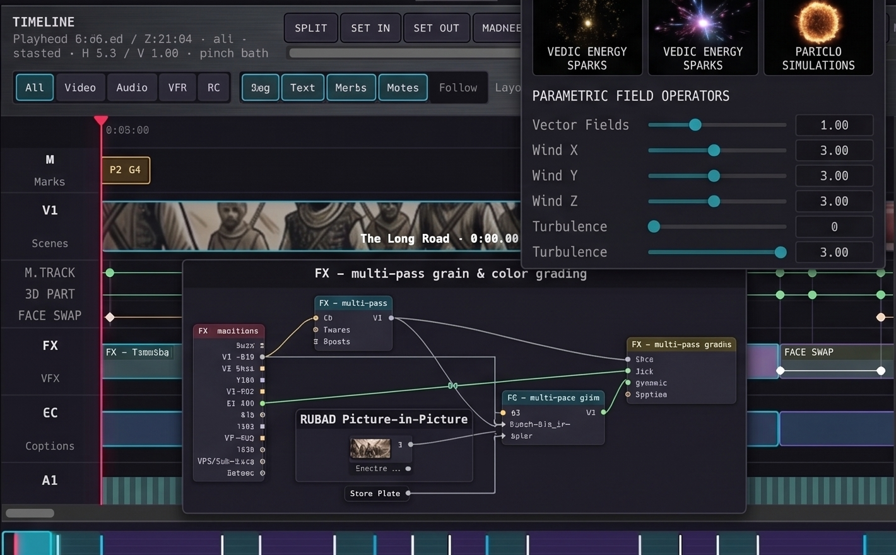
Compositor Pro v3 Interface - 1420x880
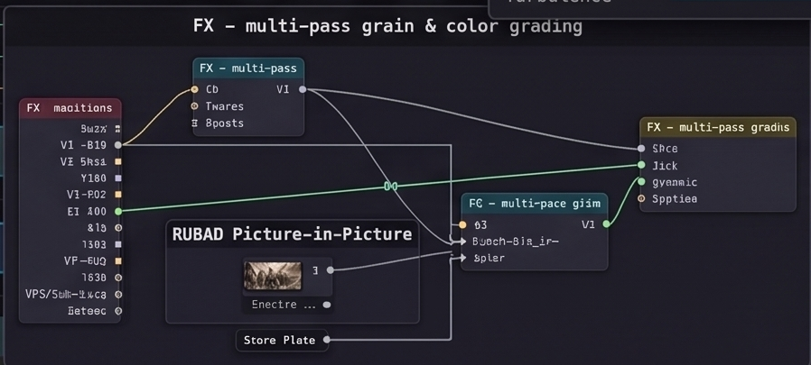
Compositor Pro v3 Interface - 898x405
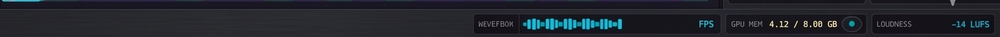
Compositor Pro v3 Interface - 2010x76
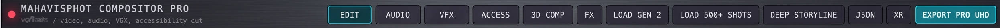
Compositor Pro Gen 2 Interface - 2492x70
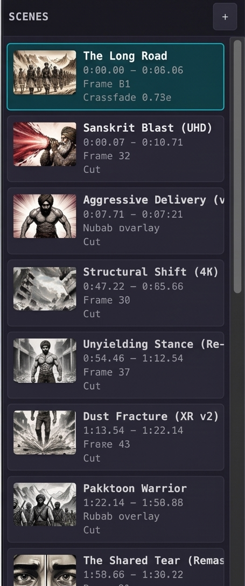
Compositor Pro Gen 2 Interface - 455x1085
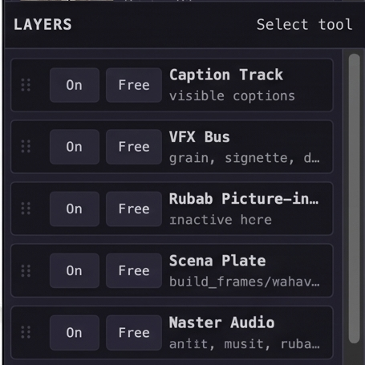
Compositor Pro Gen 2 Interface - 455x455
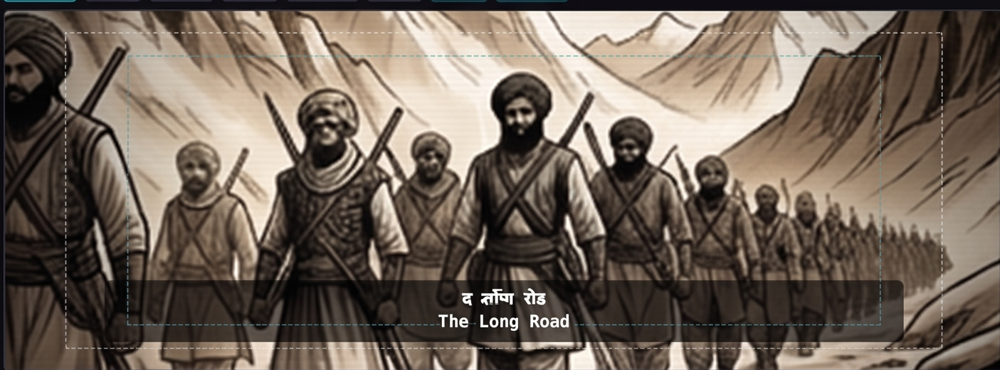
Compositor Pro Gen 2 Interface - 1405x520
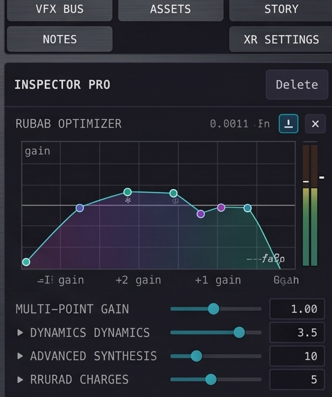
Compositor Pro Gen 2 Interface - 553x660
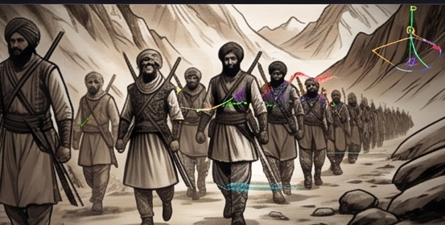
Compositor Pro Gen 2 Interface - 553x280
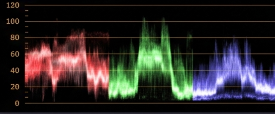
Compositor Pro Gen 2 Interface - 553x230
Compositor Pro Gen 2 Interface - 553x255
Compositor Pro Gen 2 Interface - 1405x70
Compositor Pro Gen 2 Interface - 1420x145
Compositor Pro Gen 2 Interface - 1420x740
Compositor Pro Gen 2 Interface - 898x408
Compositor Pro Gen 2 Interface - 2013x76